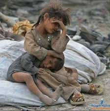

HTML Image

In the realm of information systems, the intersection of technology and social welfare has become increasingly significant. One pressing challenge facing societies worldwide is the efficient linkage between donors and individuals or communities in need of assistance. This project addresses this challenge by introducing a tool enhanced by mobile technology to facilitate seamless connections between donors and the needy.